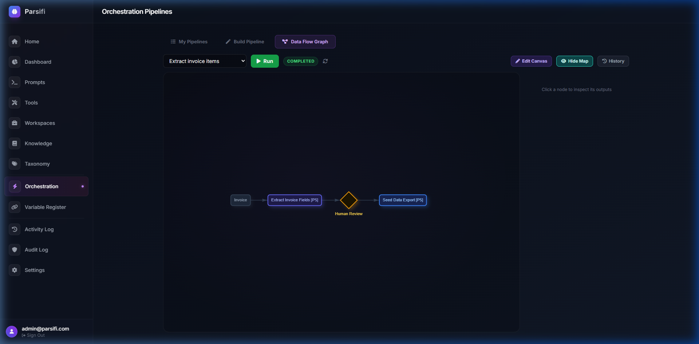

Tutorial 5: Multi-Step Workspace Pipeline
Learn how to build a linear automation sequence that categorises a document, extracts data, and branches logic based on rules.
Create a Workspace
Navigate to Workspaces and click Create Workspace.
Name it "Invoice Processing".
Click Edit Pipeline to open the builder.
Add an Auto-Categorise Step
In the workspace editor, toggle Enable Auto-Categorisation to ON.
This automatically inserts a step at the very beginning of the pipeline that uses the LLM to classify the document against your configured Taxonomy (e.g. Invoice, Contract, Receipt).
Add a Branch Step
Click the Add Branch button.
In the wizard, configure the condition: "If document category equals Invoice".
This creates a split: a YES path and a NO path.

Add an Agent Tool to the YES Path
Inside the YES branch container, click Add Agent Tool.
Select the "Invoice Extractor" tool you built in Tutorial 2.
Optionally add an Analysis step to the NO branch to log a warning like "Document is not an invoice".
Click Save Pipeline.
Execute the Workspace
Go to the Dashboard and select your "Invoice Processing" workspace from the dropdown in the upload zone.
Upload an invoice document.
Click the document row to view the execution log.